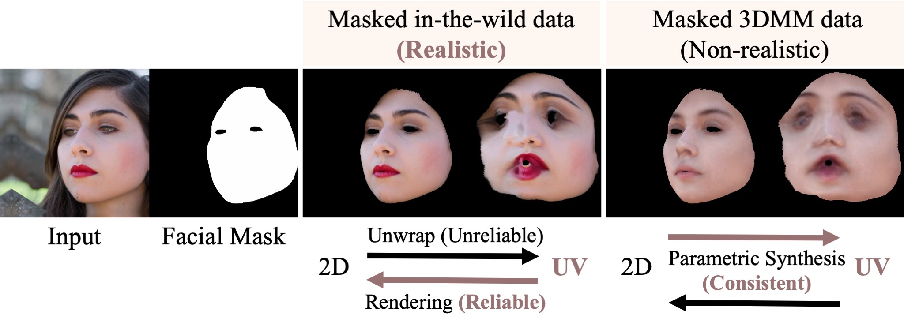

Recovering high-quality 3D facial textures from single-view 2D images is a challenging task, especially under the constraints of limited data and complex facial details such as wrinkles, makeup, and occlusions. In this paper, we introduce FreeUV, a novel ground-truth-free UV texture recovery framework that eliminates the need for annotated or synthetic UV data. FreeUV leverages a pre-trained stable diffusion model alongside a Cross-Assembly inference strategy to fulfill this objective. In FreeUV, separate networks are trained independently to focus on realistic appearance and structural consistency, and these networks are combined during inference to generate coherent textures. Our approach accurately captures intricate facial features and demonstrates robust performance across diverse poses and occlusions. Extensive experiments validate FreeUV's effectiveness, with results surpassing state-of-the-art methods in both quantitative and qualitative metrics. Additionally, FreeUV enables new applications, including local editing, facial feature interpolation, and texture recovery from multi-view images. By reducing data requirements, FreeUV offers a scalable solution for generating high-fidelity 3D facial textures suitable for real-world scenarios.
Selective domain utilization in FreeUV's texture recovery. Our Cross-Assembly strategy highlights how realistic appearance from in-the-wild images and structural consistency from 3DMM are selectively combined. FreeUV targets a UV-to-UV mapping with a Realistic and Consistent combination for optimal texture generation.
FreeUV leverages two modules, the Flaw-Tolerant Detail Extractor (left) and the UV Structure Aligner (middle), to separately capture realistic appearance and structural consistency. Combined during the Cross-Assembly inference phase (right), these modules produce high-quality UV textures from single-view images, without requiring ground-truth UV data.
@inproceedings{yang2025_freeuv,
title={FreeUV: Ground-Truth-Free Realistic Facial UV Texture Recovery via Cross-Assembly Inference Strategy},
author={Xingchao Yang and Takafumi Taketomi and Yuki Endo and Yoshihiro Kanamori},
booktitle={Proceedings of the IEEE/CVF Conference on Computer Vision and Pattern Recognition (CVPR)},
year={2025},
}